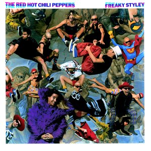

El núcleo de la banda fue formado en la preparatoria Fairfax High School como Anthym con el chileno Alain
Johannes como vocalista. Anthony Kiedis, quien estuvo haciendo una pequeña carrera como actor juvenil
televisivo bajo el apodo de Cole Dammett, solía ser su presentador y "hypeman". En febrero de 1983,
Anthony fue pedido por su amigo Gary Allen de la banda Neighbour's Voices para que lo teloneara junto a
sus amigos
Miembros fundadores
Anthony Kiedis
Flea
Hillei Slovak
Jack Irons
Influencias
Defunkt
Defunkt es un grupo estadounidense de jazz fusión y funk, fundado por el trombonista y cantante
Joseph Bowie en 1978 en Nueva York, y que aún permanece en activo. Su música toca elementos del
punk rock, el funk y el free jazz.Defunkt ha grabado y editado 15 álbumes, todos ellos en
sellos independientes.
Grandmaster Flash and the Furious Five
Grandmaster Flash and the Furious Five fue un influyente grupo estadounidense de hip hop formado
en South Bronx, Nueva York, en 1978 con sus 6 integrantes, aunque su origen como The 3 MC's es
de 1976.
The Stooges
The Stooges, también conocidos como Iggy and The Stooges, fue una banda de rock surgida en 1967
en Detroit, Estados Unidos, considerada como un referente del garage rock y pionera tanto de la
música como de la subcultura del punk.
Primeros albums
The Red Hot Chili Peppers
1984
Año de lanzamiento
500.000
#Ventas
Varios meses después de su primera actuación, la banda firmó con la compañía discográfica EMI. Pero
dos
semanas antes, What Is This? (el nombre posterior de los Anthym) había obtenido contrato con MCA,
por lo
que Slovak e Irons dejaron Red Hot Chili Peppers y se dedicaron a What Is This?.14 Kiedis y Flea no
pensaron en disolver la banda, sino que decidieron reclutar a nuevos miembros. Cliff Martínez, un
conocido de Flea de la banda punk The Weirdos, pidió sumarse a los Chili Peppers poco después.
También
se uniría Jack Sherman, "el rey pirata".15
Andy Gill, el guitarrista de Gang of Four, también pioneros en la incorporación del funk al estilo
punk,
fue contratado para producir su primer álbum.16 A pesar de que Kiedis y Flea dudaron, él empujó a
la
banda a tocar música más viable comercialmente. En un principio Kiedis quería titular el disco True
men
don't kill coyotes, pero la compañía quería que el título fuese The Red Hot Chili Peppers, a lo que
el
grupo tuvo que acceder finalmente. El disco salió el 10 de agosto de 1984 y fue un fracaso
comercial.17
Vendió aproximadamente 500.000 unidades y obtuvo poco reconocimiento. La siguiente gira estuvo un
poco
mejor, aunque Kiedis y Sherman tenían una relación muy tensa. Sherman fue despedido poco después y
Slovak regresó a la banda, después de hartarse de What Is This?.
Freaky Styley

650.000
#Ventas
1985
Año de lanzamiento
George Clinton (el líder de Parliament y Funkadelic) fue elegido (a petición de Anthony y Flea) para
producir el próximo álbum de la banda, Freaky Styley.
El álbum fue grabado en el Detroit's famed R&B and funky United Sound Systems studios en el borde de
la Universidad Estatal de Wayne.18 Clinton combinó diversos elementos del punk y el funk en el
repertorio de la banda, que permitieron incorporar variedad a la música. De hecho en la canción
"Hollywood", que es una adaptación del tema "África" de los legendarios funkateers de Nueva Orleans
The Meters, participa en el Saxofón el músico Maceo Parker, que al igual que el bajista Bootsy
Collins, había grabado para el padre del Funk, James Brown, y el mismo Clinton. El álbum apenas
superó en ventas al anterior; aunque, eso sí, pudieron ser invitados a un importante festival de
rock en Alemania (Rockpalast 85) como invitados de Clinton y la P-Funk All-Stars, además de aparecer
tocando el epiléptico tema "Blackeyed Blonde" en una escena de la película sobre skaters Trashin
dirigida por David Winters el año siguiente.
The Uplift Mofo Party Plan
750.000
#Ventas
1987
Año de lanzamiento
Cliff Martínez dejó el grupo en el verano de 1986. Jack Irons se quedó sin trabajo y, separado de
otros compromisos, se reintegró al grupo. Anthony, Flea y Hillel quedaron muy sorprendidos.
Posteriormente, Anthony fue despedido por su adicción a las drogas, pero al mes volvió. El grupo
eligió a Michael Beinhorn, quien había colaborado con Herbie Hancock, y formado grupos como Material
y Tackheads, para producir su próximo álbum que empezó a tener forma, usando la misma mezcla de funk
y ritmos que Freaky Styley, pero con sonidos mucho más agresivos de punk y metal. Reuniéndose los
cuatro integrantes, empezaron el proceso de creación.
El 29 de septiembre de 1987, The Uplift Mofo Party Plan salió a la venta, convirtiéndose en el
primer álbum de los Red Hot Chili Peppers en aparecer en algún Chart. A pesar de que llegaron solo
al puesto 148 en el Billboard Hot 200, fue un éxito importante en comparación con los dos primeros
álbumes a pesar de haber vendido nada más que 750.000 copias aproximadamente.
Camino al éxito
Mother's Milk fue lanzado el 15 de agosto de 1989 y tuvo con la canción tributo a Hillel Slovak "Knock Me
Down" que fue su primera canción en llegar al top 10 de las canciones de rock. También tuvieron un gran
éxito con la interpretación de Higher Ground de Stevie Wonder. Con su gran línea de bajo en 'slap' y
ritmo rápido de funk, "Higher Ground" representó la perfecta mezcla del Motown de los 70 con el punk.
Mother's Milk vendió casi 3 millones de copias alrededor del globo. Otros sencillos de la banda fueron
Knock Me Down y Taste the Pain. Una canción lanzada como bonus track en diferentes sencillos, llamada
Show Me Your Soul formó parte de la banda sonora de la película Pretty Woman. Este albúm puede ser
considerado como el inicio del éxito de la banda.

.jpg)